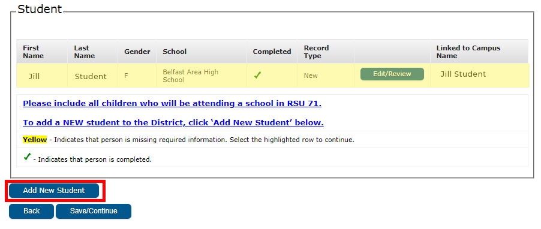

Since you have already have at least one other student in our system the application will pull all of your existing information, saving you time.
Click Here to access the RSU 71 Parent Portal. (If you have never logged in, directions are listed on the login page.)
When you get to the "Student Section" of the Registration Process you will Edit/Review your existing students then click on the Add New Student button to add your Kindergarten student. See image:

Once logged in to the portal:
- Click More(or the 3 bars at the top left if you do not see the More link)
- Annual Student Update